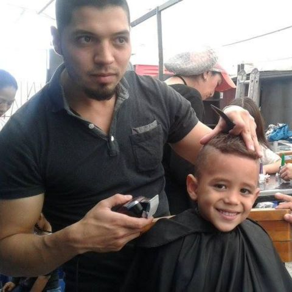

Dignificación como catalizador del éxito
Dignificarte
Artículos para el hogar, brigadas de salud y convenios que mejoran la calidad de vida de las familias.

Qué hacemos
Creamos programas que les permiten a las familias acceder a herramientas que dignifican su condición humana y social, y su salud.
- Para quién
- Familias y comunidades afectadas que se postulan al programa.
- Qué reciben
- Beneficios que mejoran su calidad de vida, como artículos para el hogar y brigadas de salud.
Cómo funciona
Recibimos las postulaciones y seleccionamos a las familias y comunidades afectadas.
Las vinculamos al programa de forma permanente.
Entregamos beneficios para mejorar su calidad de vida.
Valoramos el proceso, su efectividad y su influencia en la comunidad.
Cerramos el proceso.
Súmate
Cómo participar
Ya seas una familia, una persona que quiere ayudar o una empresa, hay una forma de sumarte.
-
Familias
Inscribe a tu familia
Los programas son para niños y niñas en situación de vulnerabilidad y sus familias, de la comunidad que acompaña la fundación.
-
Padrinos y madrinas
Apadrina a un niño
Con $45.000 al mes (es decir, $1.500 al día) apoyas la formación, la alimentación y el acompañamiento de tu ahijado. monto por confirmar
-
Empresas
Patrocina un programa
Con $300.000 al mes tu empresa patrocina uno de nuestros programas y recibe cada trimestre un informe con cifras de impacto. monto por confirmar
También en Nuestros programas
-
Alimentarte
Alimenta tu cuerpo, nutre tu mente
Conoce el programa Alimentarte -
Formarte
Formación integral para futuros brillantes
Conoce el programa Formarte -
Educarte
Capacitación para familias y jóvenes
Conoce el programa Educarte -
Bienestar infantil
Recreación y bienestar como derecho
Conoce el programa Bienestar infantil -
Tu mente tu aliada
Atención psicológica y social
Conoce el programa Tu mente tu aliada
Pendientes de confirmación (vista previa)
Cada elemento marcado por confirmar en esta página depende de una suposición de trabajo o de información que la fundación aún no ha confirmado. Nada se publica hasta que la fundación lo confirme.
- Nombre y contenido: la página actual (/cuidarte/) se titula «Cuidarte» y su encabezado dice «Dignificación como catalizador del éxito»; la página archivada /dignificarte/ pide otros artículos (calzado, ropa y herramientas de trabajo). ¿Cuál es la lista vigente?
- Programa: la descripción y los pasos vienen de la página de Dignificarte (2024); confirmar que siguen vigentes y qué brigadas hace el programa.
- Lo que necesitamos: la lista viene de la página del programa (2024); confirmar qué se necesita hoy y cómo se reciben las donaciones en especie.
- Apadrinamiento y patrocinio empresarial: montos de $45.000 al mes ($1.500 al día) y de $300.000 al mes ($9.990 al día), y el informe trimestral para las empresas.
- Consentimiento de imagen: la foto de la jornada muestra a un niño; no hay consentimiento registrado.
- Resultados: «Efectos de nuestros programas» publica doce cifras de 2023 sin atribuirlas a un programa; por eso esta página no muestra cifras. ¿Se pueden atribuir?
- Pie de página: NIT y dirección registrada; que los números de WhatsApp y los correos sean los públicos.